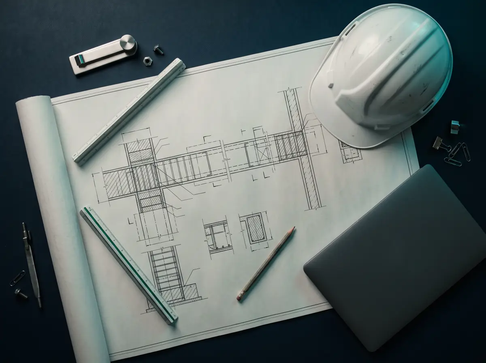
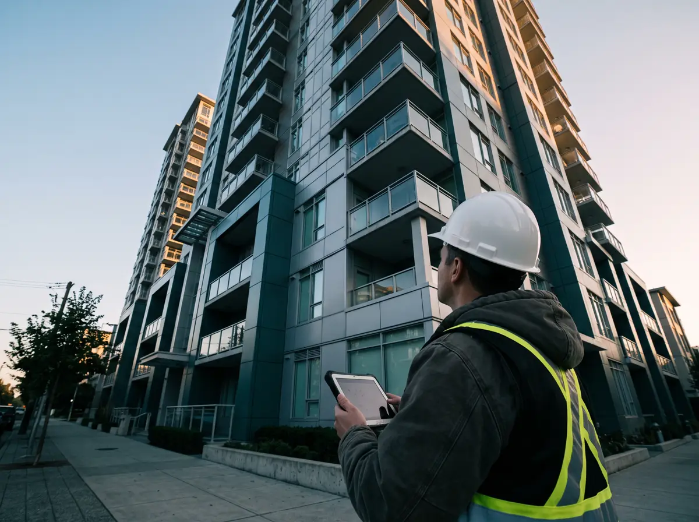
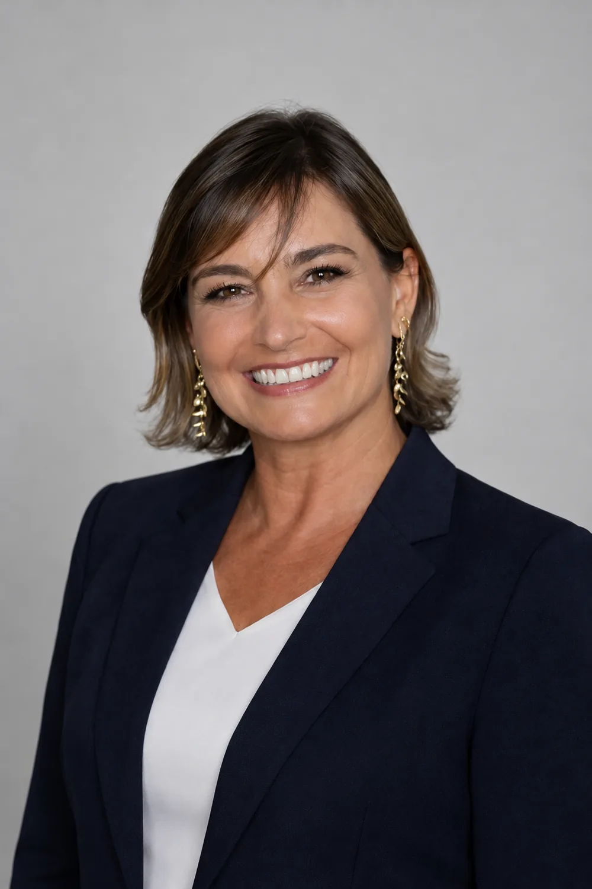

Carregando projeto
Carregando projeto
Projetos estruturais e complementares, vistorias, inspeção predial e perícia. Engenharia assinada por quem tem mais de 35 anos de obra e laudo.
Normas técnicas rigorosas em cada projeto.Cada projeto é desenvolvido com base nas mais rigorosas normas técnicas.
Mais de 35 anos de mercado e consultoria especializada.Mais de 35 anos de experiência no mercado, com atendimento personalizado e consultoria especializada.
Suporte técnico completo e prazos otimizados.Suporte técnico completo durante todo o projeto, com prazos de entrega otimizados.
Do cálculo da estrutura às instalações, cada projeto segue as normas vigentes e se integra à arquitetura.

Imagem ilustrativaConcreto armado e alvenaria autoportante.Dimensionamento de concreto armado e de alvenaria autoportante, com projeto completo para edificações residenciais, comerciais e institucionais.
Água fria, esgoto e drenagem.Projetos de água fria, esgoto sanitário e drenagem predial.
Circuitos, quadros e segurança.Circuitos, quadros de distribuição e segurança elétrica.
Investigação de fissuras e patologias com embasamento técnico e responsabilidade jurídica.
Avaliações minuciosas e diagnósticos periciais, com documentação para proteção legal e patrimonial.


Imagens ilustrativasDocumentação técnica de imóveis vizinhos à obra, para proteção legal e patrimonial.
Avaliação técnica das condições de uso, operação e manutenção da edificação.
Investigação de fissuras, patologias e laudos periciais conclusivos.
Avaliação técnica para reformas e modificações em edificações existentes.
NBR 16280Verificação técnica das condições de imóveis novos ou reformados na entrega das chaves.
Avaliação de desempenho de edificações habitacionais conforme a norma brasileira.
NBR 15575Um processo claro, para você saber o que esperar em cada etapa.
Você descreve o imóvel e a necessidade pelo formulário ou pelo WhatsApp.
Analisamos o caso e enviamos a proposta, com escopo e condições.
Vistoria técnica no local ou desenvolvimento do projeto, conforme o serviço.
Documento conclusivo, com responsabilidade técnica e recomendações.

Engenheira civil com mais de 35 anos de experiência no setor da construção civil, atuando na elaboração de projetos estruturais em concreto armado, alvenaria autoportante e instalações prediais. Mestre em Estruturas, aplica conhecimento técnico profundo para desenvolver soluções seguras, eficientes e alinhadas às melhores práticas do mercado.
Tem atuação consolidada na realização de vistorias técnicas e na elaboração de laudos especializados, com análise minuciosa das condições construtivas, diagnóstico de patologias e recomendações de intervenção com responsabilidade técnica.
“Cada projeto que assinamos e cada laudo que entregamos carrega mais do que técnica, carrega responsabilidade, visão e compromisso com o futuro. [...] Porque engenharia, para nós, é construir confiança em cada etapa.”Carla Montanari
Quando uma obra vai começar perto de imóveis vizinhos. A vistoria registra o estado atual dos imóveis do entorno e protege tanto a construtora quanto os vizinhos, com um relatório técnico imparcial.
A vistoria avalia as condições de um imóvel em um momento específico, como reforma, entrega ou vizinhança. A inspeção predial avalia o uso, a operação e a manutenção da edificação. A perícia investiga a causa de problemas, como fissuras e patologias, e conclui com laudo técnico.
É a norma brasileira de desempenho de edificações habitacionais. A CMG faz a avaliação de atendimento a ela.
A NBR 16280 trata da reforma em edificações e prevê avaliação técnica antes da obra. A vistoria de reforma verifica as condições do imóvel para que a intervenção seja segura.
Depende do tipo de serviço, do tamanho e da complexidade do imóvel. Descreva o seu caso no formulário ou no WhatsApp e enviamos o orçamento com escopo e prazo.
Sim. Pela Engenharia Social, oferecemos projetos com valores reduzidos para famílias de baixa renda. Entre em contato para conversarmos sobre o seu caso.
Estamos à disposição para atender você.
Engenharia acessível a todos
Projetos de engenharia com valores reduzidos para famílias de baixa renda construírem, reformarem ou regularizarem seus imóveis com segurança e responsabilidade técnica.Acreditamos que a engenharia deve ser acessível a todos. Por isso, oferecemos projetos de engenharia com valores reduzidos para famílias de baixa renda, contribuindo para que mais pessoas possam construir, reformar ou regularizar seus imóveis com segurança, qualidade e responsabilidade técnica.
Nosso objetivo é promover inclusão social por meio da engenharia, garantindo acesso a serviços profissionais essenciais, como projetos arquitetônicos, estruturais, elétricos, hidráulicos e documentações técnicas, sempre respeitando as normas vigentes e as necessidades de cada família.
Se você busca uma solução técnica confiável e com custo acessível, entre em contato conosco. Juntos, podemos transformar sonhos em realidade, tornando a construção civil mais justa, segura e acessível para todos.